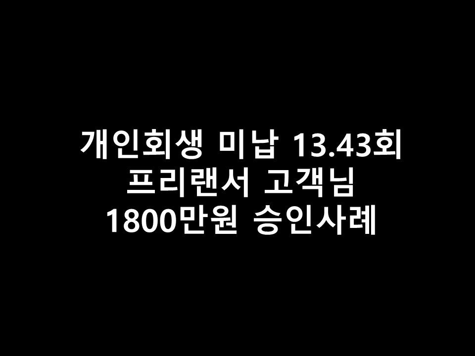
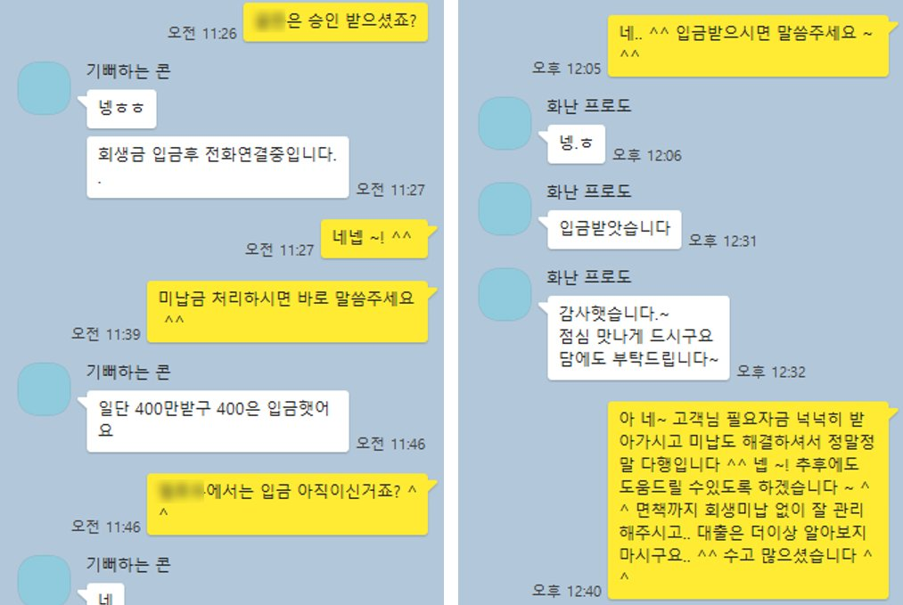

★개인회생 미납 13.43회 프리랜서 고객님의 1800만원 승인사례★

회생 미납 13.43회 프리랜서 고객님의 1800만원 승인사례
안녕하세요 오늘은 개인회생중인 프리랜서 고객님의 승인사례를 소개해드리겠습니다 ^^
고객님께서는 현재 프리랜서로 1년 8개월간 근무하셨으며, 월 평균 급여는 200만원 가량이셨습니다.
개인회생중이셨으며 총 36회중 30회차, 미납이 13.43회 있으셨습니다..
월 변제금은 52만원으로 미납금만 총 700만원 가량 있으신 상태이셨습니다.
고객님께서는 최소500만원의 필요자금이 생기셔서 저희 뱅크앤론에 문의를 주셨습니다.
미납이 있으신 상황에서는 단순 추가대출만은 불가하기때문에..
미납 해결과 함께 추가자금도 받아가실 수있는 방법으로 안내해드리도록 하였습니다.
G대부로 한도조회를 한 결과 회생미납금 정리조건으로 총 800만원의 한도가 나왔습니다 ^^
800만원의 승인금액으로 회생미납금 700만원 가량을 정리해주신 후,
추가자금 융통을 위해 T대부로 조회를 한 결과, 1000만원의 한도가 나오게 되었습니다 ^^
그로인해 고객님께서는 미납해결과 동시에 총 1100만원의 추가자금을 넉넉히 받아가실 수있게 되었습니다 ~!
앞으로 이번 회생을 미납없이 꾸준히 관리해주신 이후, 면책이 되시면
저축은행권으로 이번에 받으신 대부쪽 대출대환도 도움드릴 수있도록 알아봐드리기로 하였습니다 ^^
아래는 저와 고객님의 카카오톡 대화내용입니다 ^^.. 참고 부탁드립니다.
감사합니다 ~!
